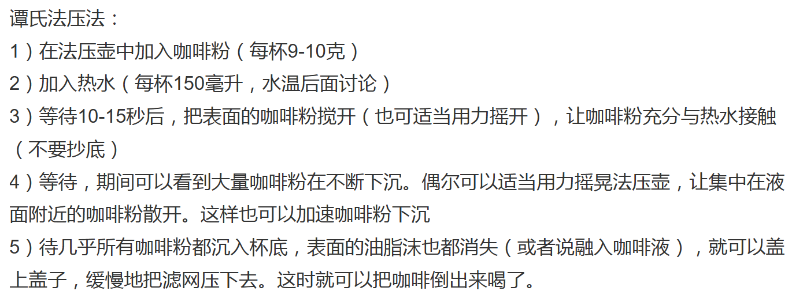
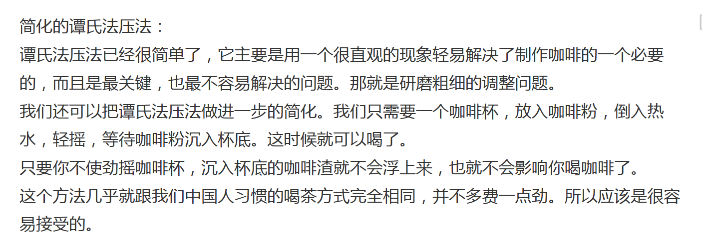

咖啡记录
记录一下个人喝过的各种咖啡。
设备：330ml法压壶
辛鹿 蓝山风味
研磨程度： 细粉（1档）
烘培程度： 浅度烘培
风味描述： 柠檬 青杏 葡萄柚
处理方式： 水洗
价格：35/454g
冲泡方式： 5min 法压壶 100度热温水
评价：粉本身闻起来很香，有那种典型咖啡粉的香气。冲泡后就如同风味描述所言，有点像葡萄柚水一样，酸度较大。果香味是没闻出来的。由于这是咱们买的第一款咖啡，所以研磨程度和烘培程度感觉都选错了。 （2024.02.26）
后续研究发现，加长静置时间能有效改善口感。
冲泡方式： 7h冷萃 法压壶 20度温冷水
评价：说是冷萃，其实就是用冷水冲泡。味道很好，相比热水冲泡的，冷萃后的咖啡口感更纯一些，可能是因为静置时间较长使咖啡中的油脂或杂质充分沉淀。冰凉的口感与微酸的味道简直是绝配，推荐每天晚上冲泡一杯第二天早上起来喝。（2024.02.27）
冲泡方式： 法压壶 100度开水
改进了冲泡方式之后，现在的蓝山风味能泡出纯正的美式咖啡风味了：酸度较小，中苦，非常适合做拿铁。
冲泡小技巧：放入较多量的咖啡粉；用电热水壶刚烧开的开水冲泡，刚烧开的开水可能会含有一定的水蒸气，能够增大法压壶内部的气压；同时倒入水后盖上盖子，不要压下滤网。等待片刻即可。
由于内部有气压的存在，压下滤网的时候可能会导致咖啡喷洒，需要注意。
当然这也可能是咱们的蓝山风味放了一年了，导致咖啡粉味道改变造成的。
2025.02.23
辛鹿 01基础意式拼配
研磨程度：中等（3档）
烘培程度：重度烘培
风味描述：黑巧克力/全麦面包 杏仁/焦糖
处理方式：水洗
冲泡方式：18min 法压壶 100度热温水 22g
评价：感觉粉放的有点多，1:15的粉水比有点大，应该1：20左右更好。
相比之前买的浅度烘培蓝山风味咖啡，这款咖啡的味道更加醇厚，略微有一丝苦味，可能这就是所谓的意式风味？虽然没有实践，但感觉用这种咖啡做拿铁的话味道也会很好。个人感觉18min的时间还是有点短了，如果能泡更长时间的话或许口感能进一步上升。
总体而言体验不错，后面可能会考虑购入大袋装。（2024.02.29）
辛鹿 02意式焦糖拼配
研磨程度：中等（3档）
烘培程度：中深烘培
风味描述：黑巧克力/太妃糖/焦糖
处理方式：日晒/水洗
冲泡方式：>20min 法压壶 100度热温水 22g
评价：一开始只打算加一半的量，但试泡了一下发现效果不行，于是遂把22g全部加了。感觉比上边那种要酸很多，口感不如上边那种。也可能是我们的冲泡方式问题。
看了眼评论，也有人反映这种咖啡很酸，说明不是我的问题。（2024.03.01）
辛鹿 08黑蜜处理
研磨程度：中等（3档）
烘培程度：中度烘培
风味描述：葡萄干/樱桃/蜜饯/复合花香
处理方式：蜜处理
冲泡方式：40min 法压壶 100度热温水 约18g
评价：因为操作失误，咖啡粉撒了一些，于是实际冲泡的只有不到20g，哭唧唧。按照店家描述，这种咖啡应该是酸甜并举的类型，但实际上只有酸没喝出甜味…… （2024.03.02）
辛鹿 03曼特宁风味
研磨程度：中等（3档）
烘培程度：重度烘培
风味描述：黑巧克力/焦糖/坚果/杉木
处理方式：水洗
冲泡方式：9h冷萃 法压壶 40度温水 22g
评价：比上边的02、03稍好一点，但还是酸……单就酸咖啡而言又没有蓝山风味有特色。为什么最近这几款咖啡不是酸就是酸呢？好奇怪。
早上剩了半杯没喝完，晚上再喝的时候酸味消失了，可能是因为经过长达9+8h的浸泡后咖啡充分萃取的缘故吧。（2024.03.03）
辛鹿 04精品罗布斯塔
研磨程度：中等（3档）
烘培程度：重度烘培
风味描述：黑巧克力/大麦茶/奶油/杉木
处理方式：水洗
冲泡方式：法压壶 100热温水 22g ，时间我也不知道，反正喝到最后大于24h了
评价：不酸。可能因为泡的时间巨长的缘故稍微有点苦涩，总体而言还是可以的。（2024.03.04）
辛鹿 05精品蓝山风味
研磨程度：中等（3档）
烘培程度：中度烘培
风味描述：黑巧克力/葡萄柚/可可
处理方式：水洗
冲泡方式：法压壶 100热温水 22g ，时间我也不知道，反正喝到最后大于24h了
评价：一开始喝的时候感觉比我那款浅度细粉的蓝山还要酸，口感不怎么样。等到24h之后再喝的时候酸味消失了，但还是稍有苦涩。真的很奇怪，为什么这几杯小包装的咖啡我都感觉不咋地，是因为粉水比高了吗？（2024.03.09）
辛鹿 09红酒日晒
研磨程度：中等（3档）
烘培程度：中偏浅烘培
风味描述：葡萄干/红酒/芒果/榴莲
处理方式：日晒
冲泡方式：法压壶 100热温水 22g ，时间不知道x3
评价：闻起来真的有红酒味，喝起来不清楚，毕竟我没怎么喝过红酒。虽然还是有点酸但口味也还行（2024.03.18）
PS：最近比较忙，好久没喝咖啡了QAQ。
辛鹿 10埃塞耶加雪菲
研磨程度：中等（3档）
烘培程度：中偏浅烘培
风味描述：樱桃/水蜜桃/柑橘/山茶花
处理方式：水洗
冲泡方式：法压壶 100热温水 22g ，时间不知道x3
评价：酸，但是酸香的感觉，口感还可以。不过并不能喝出果香味。(2024.03.18)
辛鹿 06庄园圆豆
研磨程度：中等（3档）
烘培程度：中度烘培
风味描述：芒果/蓝莓/巧克力/柠檬
处理方式：水洗
冲泡方式：法压壶 100热温水 22g ，1h
评价：一个字评价：酸。感觉辛鹿的这十种22g小包装除了01以外全是酸的，各种五花八门的酸，如果不是很喜欢喝酸咖啡的人慎入。（2024.03.21）
辛鹿 07精选黑皮卡
研磨程度：中等（3档）
烘培程度：中度烘培
风味描述：柠檬/桂圆/覆盆子/蓝莓
处理方式：水洗
冲泡方式：法压壶 100热温水 22g ，2h
评价：居然漏了一袋咖啡。不过这块并没有给我们带来意外惊喜：一如既往的酸咖啡。（2024.04.01）
辛鹿 意夏
研磨程度： 中偏粗
烘培程度： 重度烘培
风味描述： 不清楚
处理方式： 不清楚
价格：39/500g
冲泡方式：法压壶 100热温水 22g 1h
评价：不酸，感觉相比01基础意式少了点香醇，不知道是什么原因。
（时间丢失）
补：这款是老版意夏，可能和新款意夏有点区别。
2025.02.23
辛鹿 意夏SOE
研磨程度： 中偏粗
烘培程度： 深度烘培
风味描述： 黑巧克力/坚果/面包/焦糖
处理方式： 希腊奶
价格：52.5/500g（涨价很多，悲）
这款是新款意夏，似乎是老款意夏+老款蓝冬的拼配方案？目前的方案是：中度浅度烘焙叫蓝冬，深度烘焙叫意夏。
咖啡豆产地科普:SOE是什么？ - 知乎
SOE：single origin espresso，单一产地咖啡豆，与拼配咖啡豆相对。一般是作为加钱的一种噱头，不过辛鹿的豆子大多是云南产的，所以说即使是最低端的叫SOE也合情合理。
冲泡方式：法压壶 100热温水 不知道多少克
评价：好喝，不酸不苦很香，个人非常喜欢。直接喝很好，加牛奶做拿铁也很好。
2025.02.23
冲泡方式：30g，别的和上边一样。
评价：感觉比上边那个要淡，不知道为什么。
2025.03.02
冲泡方式：44g，别的和上边一样。
评价：有点过浓了，苦感出来了，悲。
2025.03.02
补评：有点太猛了，喝完一个晚上都没睡着，直接通宵，悲。
2025.03.03
辛鹿 糖心菠萝SOE
研磨程度： 3档（39~45，for手冲）
烘培程度： 中度烘培
风味描述： 菠萝、黄金百香果、蜂蜜、香槟
处理方式： 厌氧日晒
产区： 埃塞俄比亚 西达摩 阿贝格那 如目达摩处理站
豆种：74110（74年110号）
价格：59/250g
辛鹿新年上新！糖心菠萝 一定不能错过的soe咖啡豆_哔哩哔哩_bilibili
第一次喝这么贵的豆子（虽然考虑涨价因素的话也不算太贵）QAQ。
埃塞俄比亚｜西达摩咖啡产区如目达摩、哈马修咖啡介绍 中国咖啡网
冲泡方式：350ml法压壶，20g（1:15~1:16左右），谭式法压法
气味是比较明显的酒味（应该是香槟酒的味道，不过我有点记不清楚香槟酒是什么味道了）
酸度很大，几乎没有苦味（不过可能是浸泡时间稍长的缘故，略有一丝涩味），甜度较小。感觉像是酸果汁的味道。
加糖之后便是真正的“糖心菠萝”，甜度占据上风，酸酸甜甜的味道很好。
不太清楚是不是因为我们的冲泡方法不对导致甜味没出来，有时间再试一下。
下次再降低一下粉水比和萃取时间🤔。
辛鹿自家的手冲方案是直接干到了1:21的粉水比，下次可以试试。
2025.03.05
冲泡方式：350ml法压壶，315g水 15g粉 1:21，谭式法压法
降低粉水比降低萃取时间，效果更好。目前基本无杂味，酸度相比上次降低，同时甜度增大；当然还没增大到“蜂蜜”的级别。
2025.03.07
咖啡笔记
记录一些关于咖啡的知识。
咖啡种类
| 科 | 茜草科 |
| 属 | 咖啡属 |
| 种 | 124种，包括阿拉比卡、罗布斯塔等 |
| 亚种 | 例如波旁、铁皮卡 |
尽管咖啡属下的种类繁多，但可使用的咖啡品种只有极少数几种，主流种类有：阿拉比卡（小果）、罗布斯塔（中果）以及比较少见的利比里亚（大果）。
阿拉比卡家族
源于埃塞俄比亚高原的原生种咖啡。又称小果咖啡，占据目前全球总产量的70%+。
铁皮卡 typica
最经典、最古老的阿拉比卡咖啡之一，风味优良但是抗病虫性差、产量相对较低，因此相比其他咖啡更为稀少、昂贵。
一些例子：
- 牙买加蓝山一号咖啡豆：大名鼎鼎的蓝山咖啡，堪称咖啡中的奢侈品。
- 云南铁皮卡：最初云南引进的咖啡品种就是铁皮卡和波旁，但由于铁皮卡抗病性差，后来改种卡蒂姆种。 目前云南仍有少量的铁皮卡种植，例如辛鹿的07精选铁皮卡，但是为啥我泡出来的就这么酸呢？
名词说明
100度开水：电热水壶刚烧开的水，含有水蒸气。
100度热温水：鸭大宿舍饮水机上的“100度开水”，实际有没有100度无从而知；同时几乎没有水蒸气。
法压壶泡法
法压壶（French press）的原理是什么？ - Peter Tam的回答 - 知乎
https://www.zhihu.com/question/19742781/answer/127328055

咖啡处理工艺
磨豆机
SinloyCoffee/辛鹿咖啡|价格相差1000倍的磨豆机区别到底多大？盲测￥20+~￥20000+磨豆机！栗子C|C40|EK43|砍豆机_哔哩哔哩_bilibili
非常好玩的一个结果，真·盲测。
最后的结果是：2w的EK43>淘宝热销30元磨豆机>80元砍豆机>栗子C（260左右） / c40（1600左右） >神秘磨豆机。
总之就是非常坑爹的结果。
至少能证明即使是贼差的磨豆机也会有比较好的上限。
2025.03.05